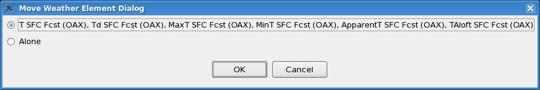

Temporal Editor Dialogs
February 14, 2012
The following dialogs are invoked from the Temporal Editor:
Move
Weather Element Dialog
The Move Weather Element Dialog provides the capability of moving a
weather
element from one temporal pane to another temporal pane.

Temporal
Editor Display Attributes Dialog
The Temporal Editor Display Attributes Dialog displays the following
information corresponding to the weather element
you selected: Image Visual Type or Graphic Visual Type.
You can change the settings of any of the attributes listed in the
dialog
and click OK. To close the dialog without
making any changes, simply click Cancel.

Set Weather Dialog
The set weather dialog is used to define a new weather value, and then
set the data in the temporal editor to that value. Pressing the
"SET"
button will set the current pickup value for the Wx parm and will also
change the data.
For more details on how the dialog works, please refer to the Weather
PickUpValue dialog that is used for the spatial editor.

Set Discrete Value Dialog
The set discrete value dialog is used to define a new discrete value,
and
then set the data in the temporal editor to that value. Pressing
the "SET" button will set the current pickup value for the discrete
parm
and will also change the data.
For more details on how the dialog works, please refer to the Discrete
PickUpValue dialog that is used for the spatial editor.

Back To Top